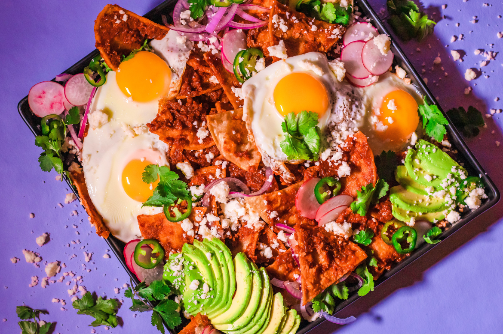

Posole Recipe

What are Chilaquiles?
Chilaquiles is another popular Mexican dish that is enjoyed during breakfast and is personally one of my favorite breakfast foods
Chilaquiles can be made many different ways but my faorite is made with either red sauce, green sauce, or habanero sauce.
For this recipe I will be using the red sauce recipe. I got this recipe from the Food Network
Below is the list of ingredients that we will need for this recipe
This is the recipe for the red sauce
- 1 pound fresh tomatillos
chopped
- 3 fresh serrano chiles
- 3 garlic cloves, unpeeled
- 1 large onion, coarsely chopped
- Olive oil
- Salt and freshly ground black pepper
- 1/2 cup fresh cilantro leaves
- 1/4 cup chicken broth or more as needed
This is the recipe for the Chilaquiles
-
1/3 cup vegetable oil
- 10 corn tortillas, cut into eighths, preferably stale (spread out to dry overnight)
- 3 cups roasted Tomatillo Salsa
- Kosher salt and fresh ground black peppe
- 1/2 cup crumbled queso fresco*** or a mild feta
- 2 thin slices onion, separated into rings
- 1/2 cup Mexican crema, creme fraiche or sour cream
- 1/4 cup chopped fresh cilantro leaves, for garnish
Below are instruction from the Food Network on how to properly prepare this dish.
- Special equipment: 4 individual casserole dishes
- To make the salsa:
- Preheat the broiler or oven to 550 degrees F.
- Remove husks from the tomatillos and rinse under warm water to remove the stickiness. Put the chiles, garlic, onion and tomatillos on a baking sheet. Season with a little olive oil, and salt and pepper, to taste. Put on a rack about 1 or 2 inches from the heat, and cook, turning the vegetables once, until softened and slightly charred, about 5 to 7 minutes. When cool enough to handle, peel the garlic and pull off the tops of the chiles. Add all the broiled ingredients to a blender along with the fresh cilantro and puree. Pour in 1/4 cup of chicken broth and blend to combine. Add more broth, if needed, for desired consistency.
- To make the chilaquiles:
- Pour about 1/3 cup vegetable oil into a large saute pan over medium heat. When the oil is hot, add the tortillas, working in 2 or 3 batches, and cook until lightly browned and nearly crisp. Drain the tortillas on paper towels and discard the remaining oil. Wipe the pan with a paper towel.
- In the same pan, add the tomatillo salsa and bring to simmer over low heat. Add the tortillas and cook until soft but not mushy, about 5 minutes. Season with salt and pepper, to taste. Divide the mixture among 4 individual casserole dishes. Top with the cheese crumbles and onion rings. Drizzle with Mexican crema, sprinkle with some chopped fresh cilantro and serve immediately.
- *Cook's Note: Salsa Verde means "green sauce" and is typically made with tomatillos, green chiles and cilantro. Make your own fresh, or you can also find it canned at most supermarkets.
- Tomatillos are a small green fruit encased in a tissue paper-like husk. They should be used when they are still green, before they are ripe and the husk has turned brown. Before using, remove the husk, rinse and dry the fruit. (They do not need to be seeded.) They are found in most supermarkets
- **Cook's Note: Chilaquiles is a Mexican brunch dish invented to use leftovers. It is made with day old tortillas (cut or torn into chips) and salsa verde. They are cooked together until the tortillas are slightly softened. Chilaquiles are eaten alone or with beans, eggs or shredded chicken.
- ***Cook's Note: Queso fresco is a white, mild, fresh Mexican cheese with the texture of fresh farmer's cheese in the US. Queso fresco can be found in many supermarkets, Latin specialty markets or online. It can be substituted with a mild feta cheese.